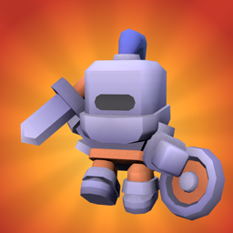

Tiny Kingdom Siege
Grow an army, smash castles, build your kingdom.
Support
Found a bug or have a question? Email tejpalsharma771@gmail.com. Please include your device model and iOS version.
Common questions
I bought Remove Ads / the Starter Pack but ads came back. Open the game, tap SHOP, then RESTORE PURCHASES. Use the same Apple ID you bought with.
Will I lose progress if I delete the game? Progress is saved on your device, so deleting the game resets it. Purchases can always be restored.
Can I turn off analytics? Yes: SETTINGS → ANALYTICS.
Privacy
Read the privacy policy.